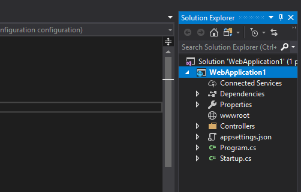
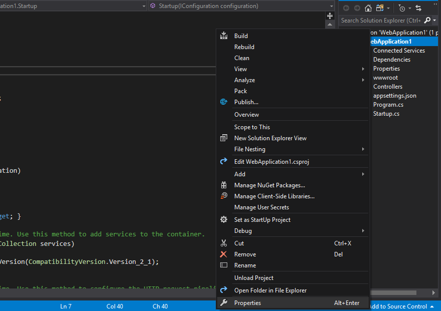
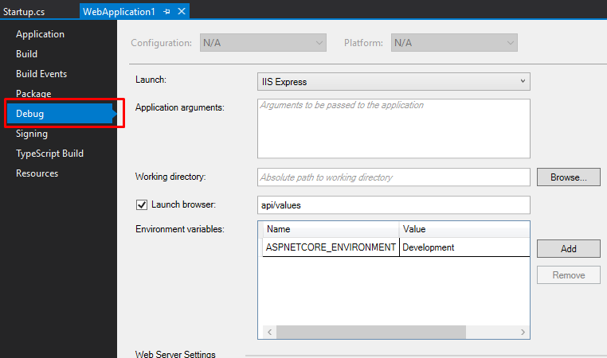
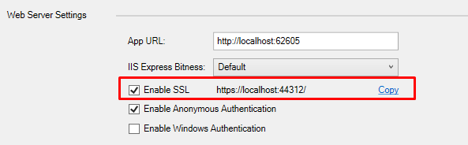

Enabled SSL or https urls in a visual studio web application ensures the authenticity of the web site. These days this feature is enabled by default in visual studio 2017 or above.
This setting can cause issue while development where you dont want to use https url. In my case it was the issue while exposing my web application url (https://localhost/myApplication) with ngrok to the web.
So i found over the web and get the following resolution:
- go to the solution explorer of you web project in visual studio
- right click on the prject name just below the Solution title
 - You will see the properties option at below, click on that
 - When the properties window open click on the debug tab
 - At below there will be a checkbox named 'Enable SSL' uncheck that and you are done.

Run your project and you will see that the https:// url changed to http://. You can again enable the SSL checkbox to view your web application over secure link